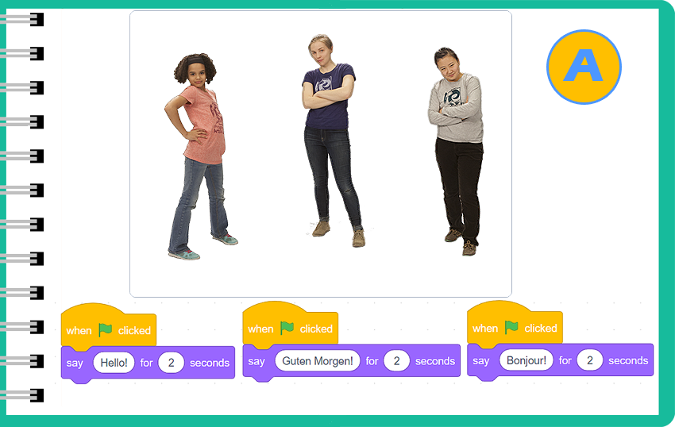
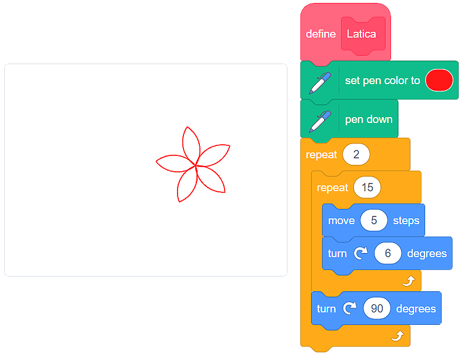

Proçedura¶
Ne nuk kemi pse ta krijojmë programin në tërësi.
Është shumë më e qartë nëse ndajmë pjesë të kodit në pjesë më të vogla, të ndara - procedurat. Përcaktimi i procedurave e bën më të lehtë programet e shkrimit dhe gjetjen e gabimeve. Kjo është arsyeja pse është mirë të mbani procedurat në “çantën e shpinës” tuaj. Në atë mënyrë, ju do të jeni në gjendje t’i përdorni ato në programet e tjera që krijoni, dhe të mos humbni kohë për t’i bërë përsëri.
Transmetimi¶
Programet e bëra në Scratch zakonisht kanë shumë pjesë që ndërveprojnë me njëra-tjetrën. Ne mund ta përcaktojmë ndërveprimin vetë, dhe mund të përdorim gjithashtu procedurën e integruar që lejon imazhet të transmetojnë mesazhe dhe të ndikojnë në ekzekutimin e programit. Përdorimi i procedurës së transmetimit do të ulë ndjeshëm numrin e blloqeve në program, dhe do ta lehtësojë leximin e kodit.
{kind=link}

:feedback_b: Ke të drejtë! Kur transmetojmë mesazhet, lejojmë që të gjithë pjesëmarrësit në bisedë të jenë të sjellshëm - dhe të mos ndërpresin njëri-tjetrin.
Shikoni procesin e krijimit të programit, i cili lejon vajzat të flasin pa ndërprerë njëra-tjetrën:
Definimi një proçedure të re¶
Në Scratch, ne mund të krijojmë një procedurë të re që do t’i përgjigjet nevojave tona.
Imagjinoni që ne duam të krijojmë një program, i cili tërheq një lule në skenë. Një lule është bërë nga petale. Prandaj, na duhen dy procedura:
Petal, brenda së cilës do të përcaktojmë vizatimin e një petale, dhe
Flower, brenda së cilës do të përcaktojmë vizatimin e pesë petaleve.
Me fjalë të tjera, procedura Flower do të thërras procedurën Petal, dhe programi kryesor do të thërrasë procedurën Flower.
Ne krijojmë një procedurë duke klikuar në kategorinë My Blocks, ku duhet të klikojmë në butonin Make e block. Do të hapet një dritare, e cila do të na lejojë të emërojmë procedurën tonë.

Nëse dëshironi që lulja juaj të ketë të njëjtat petale si ajo në figurën më poshtë, krijoni procedurën Petal që prezantuam:
{kind=link}
 Ne do t’ju lejojmë të bëni një procedurë, e cila tërheq 5 petale. Ndihmë e vogël: Pasi të vizatoni një petal, duhet ta ktheni imazhin 72 gradë në të djathtë.
Ne do t’ju lejojmë të bëni një procedurë, e cila tërheq 5 petale. Ndihmë e vogël: Pasi të vizatoni një petal, duhet ta ktheni imazhin 72 gradë në të djathtë.
Zgjidhje e mundshme
{kind=link}
 Pra, duke përdorur procedurat, ne bëjmë programe shkrimi dhe gjejmë gabimeve më lehtë.
Pra, duke përdorur procedurat, ne bëjmë programe shkrimi dhe gjejmë gabimeve më lehtë.